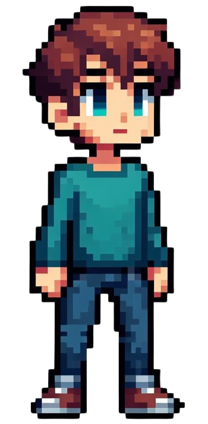
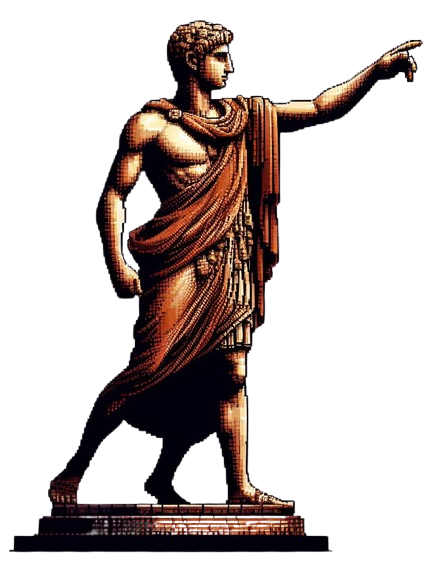

Italian Rush
Un gioco 2D endless runner che metterà alla prova le vostre capacità da gamer!
SCARICA!Trama del gioco
Eddy è un giovane affetto da un disturbo compulsivo che lo spinge a correre senza sosta tra le città italiane. La corsa è il suo modo per fuggire da pensieri ossessivi e da una realtà che non riesce a controllare.
Roma – L’inizio della fuga
La storia comincia nella maestosa Roma, tra rovine antiche e monumenti iconici. Qui Eddy inizia la sua corsa, cercando qualcosa che nemmeno lui riesce a definire. Il caos della città riflette la sua mente in subbuglio.
Napoli – Colori, caos e confronto
Prosegue verso sud, nella vibrante Napoli. Tra vicoli stretti e quartieri animati, Eddy viene travolto da un’esplosione di suoni e colori. È qui che i suoi demoni interiori cominciano a emergere, ma anche dove trova un primo barlume di conforto.
Venezia – La resa e la rinascita
Infine arriva a Venezia, tra canali silenziosi e bellezza sospesa nel tempo. Eddy si rende conto che non può più correre: è tempo di affrontare il passato, accettare se stesso e trovare la propria pace interiore.

Eddy (:
Italian Rush è più di un gioco: è un viaggio di crescita personale, dove ogni città rappresenta una tappa dell’anima.
Dettagli
Scopri le meccaniche di gioco di Italian Rush!
Meccaniche di Gioco
- Endless Runner: Il gioco si sviluppa in un'ambientazione continua senza fine, dove il giocatore controlla il protagonista Eddy mentre corre attraverso le città italiane.
- Correre e Saltare: Il giocatore può controllare Eddy facendolo correre avanti lungo le strade delle città. Può saltare per evitare ostacoli o per raccogliere monete.
- Sblocco di Livelli: Il progresso nel gioco è determinato dal raggiungimento di una determinata quantità di monete desiderate. Raccogliendo un certo numero di monete durante la corsa, il giocatore sblocca nuovi livelli e nuove ambientazioni.
- Monete: Lungo il percorso, ci saranno monete da raccogliere che consentiranno al giocatore di sbloccare nuovi livelli.
- Ostacoli che rallentano la velocità: Lungo il percorso, ci saranno vari ostacoli come scatole. Se Eddy entra in contatto con un ostacolo, la sua velocità diminuirà.
- Varietà di ambientazioni: Ogni livello potrebbe essere ambientato in una città diversa, offrendo una varietà di sfondi e temi visivi, oltre a nuovi ostacoli e sfide da affrontare.
Alcune foto del nostro gioco!
Questo qui sopra è il menu del nostro gioco, semplice e intuitivo!

Questo invece è il selettore di livelli che ci permette di immergerci nelle diverse ambientazioni!
Livelli
Scopri i diversi livelli e le loro ambientazioni!
Roma
Statua di Cesare
Gaio Giulio Cesare è stato un importante generale, politico e console romano nel I secolo a.C. È noto
soprattutto per le sue campagne militari che portarono alla conquista della Gallia e alla sua successiva
ascesa al potere a Roma. Cesare è stato anche un abile stratega e riformatore, noto per la sua eloquenza
e per la sua abilità politica.
Tuttavia, la sua ambizione e il suo desiderio di potere lo portarono
in conflitto con l'élite romana, culminando nell'assunzione del potere come dittatore perpetuo. La sua
morte per mano di un gruppo di senatori congiurati nel 44 a.C. segnò la fine della Repubblica romana e
l'inizio dell'Impero.

Napoli
Statua di San Gennaro
San Gennaro è il santo patrono di Napoli, nonché uno dei santi più venerati in Italia. È particolarmente noto per il cosiddetto "miracolo del sangue", un evento che si ripete tre volte all'anno durante la celebrazione delle sue reliquie. Si dice che il suo sangue, conservato in due ampolle nella Cattedrale di Napoli, diventi liquido in quei giorni, manifestando così il suo miracoloso intervento a favore della città. San Gennaro, vescovo di Benevento, fu martirizzato durante le persecuzioni dell'imperatore Diocleziano nel IV secolo. La sua figura è celebrata non solo a Napoli ma anche in molte altre parti del mondo dove sono presenti comunità napoletane.

Venezia
Statua di Vittorio Emanuele II
Vittorio Emanuele II è stato il primo re d'Italia, noto anche come "Padre della Patria". È stato uno dei protagonisti del Risorgimento italiano, il movimento che ha portato alla unificazione dei vari stati italiani in un'unica nazione. Nato nel 1820, Vittorio Emanuele II divenne re del Regno di Sardegna nel 1849, succedendo a suo padre Carlo Alberto. Attraverso abili manovre diplomatiche e alleanze militari, guidò il processo di unificazione italiana, sconfiggendo il dominio straniero e favorendo la formazione del Regno d'Italia nel 1861, con lui stesso come sovrano. Il suo regno vide anche la conquista di Roma nel 1870, completando così l'unificazione del paese. Vittorio Emanuele II è ricordato come un re di grande capacità politica e come un simbolo dell'unità nazionale italiana.

Fun fact: tutte le immagini del gioco sono state generate artificialmente da AI!